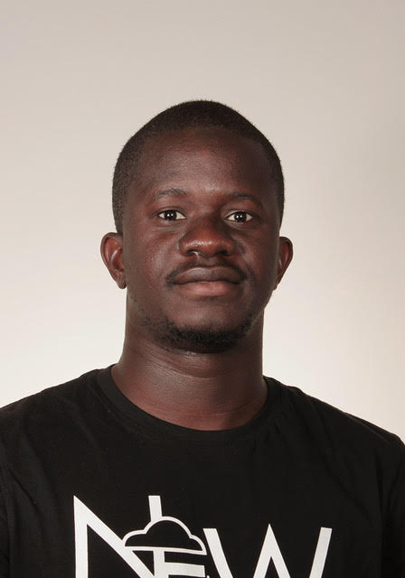
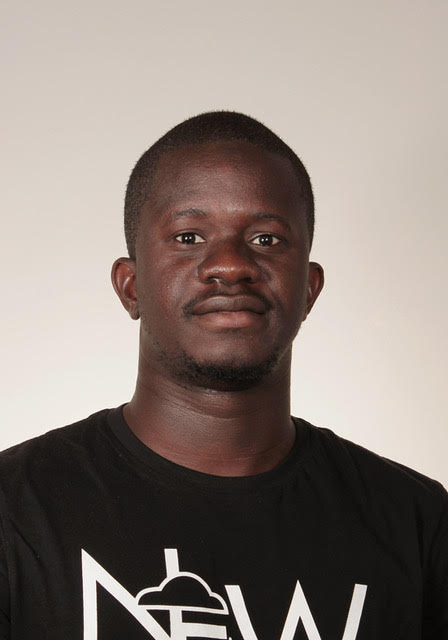

Intro
 

After completing a PhD in high dimensional statistics with a focus on theoretical understanding of graph-based and kernel unsupervised learning methods, I moved to an industrial lab at Huawei, London to pursue my desire to perform fundamental research in Machine learning and apply it to real-world problems. At Huawei, I have been involved across teams work on various projects around: unsupervised learning, multi-task learning, generative models and deep learning, mainly focused on computer vision applications. Alongside this I have worked on proving theoretical guarantees of some of the algorithms used. For a full list of publications, please check Publications.
Publications
Conferences:
H. Tiomoko, Z. Liao, R. Couillet, “Random matrices in service of ML footprint: ternary random features with no performance loss”, The Tenth International Conference on Learning Representations (ICLR'2022), 2022.
M. Tiomoko, H. Tiomoko Ali, R. Couillet, “Deciphering and Optimizing Multi-Task and Transfer Learning: A Random Matrix Theory Approach (SPOTLIGHT PAPER!) ”, The Ninth International Conference on Learning Representations (ICLR'2021), 2020.
E. Sansone, H. Tiomoko Ali, S. Jiacheng, “Coulomb Auto-encoders ”, The 24th European Conference on Artificial Intelligence (ECAI'2020), 2021.
H. Tiomoko Ali, S. Liu, Y. Yilmaz, R. Couillet, A. Hero, I. Rajapakse, “Latent Heterogeneous multilayer community detection ”, IEEE International Conference on Acoustics, Speech and Signal Processing (ICASSP'2019), 2019.
H. Tiomoko Ali, A. Kammoun, R. Couillet “Random matrix improved kernels for large dimensional spectral clustering ”, IEEE IStatistical Signal Processing Workshop(SSP'2018), 2018.
H. Tiomoko Ali, A. Kammoun, R. Couillet “Random matrix asymptotics of inner product kernel spectral clustering ”, IEEE International Conference on Acoustics, Speech and Signal Processing (ICASSP'2018), 2018.
R. Couillet, G. Wainrib, H. Sevi, H. Tiomoko Ali“A Random Matrix approach to Echo-State Neural networks ”, The International Conference on Machine Learning (ICML'2016), 2018.
H. Tiomoko Ali, R. Couillet “Performance analysis of spectral community detection in realistic graph models ”, IEEE International Conference on Acoustics, Speech and Signal Processing (ICASSP'2016), 2016.
H. Tiomoko Ali, R. Couillet “Random matrix improved community detection in heterogeneous networks ”, Asilomar Conference on Signals, Systems and Computers (ASILOMAR'2016), 2016.
Journals:
H. TiomokoR. Couillet, “Improved Spectral Community detection in large heterogeneous networks”, Journal Of Machine Learning Research (JMLR, vol 17, pp. 1-48, 2018)
-
R. Couillet, G. Wainrib, H. Sevi, H. Tiomoko AliR. Couillet, “The asymptotic performance of linear echo state networks”, Journal Of Machine Learning Research (JMLR, vol 17, pp. 1-35, 2016)
Ph.D. thesis:
H. Tiomoko Ali, “New methods for large-scale unsupervised learning”, CentraleSup√©lec, University Paris-Saclay, September 2018. [slides]
About ME
Born and raised in Cotonou (Benin), I have been admitted from the age 11-18 to the most Elistist school "Prytanee Militaire de Bembereke" (after bein the top student of my region at the end of Primary school) where I had military as well as regular courses. After obtaining my Baccalaureat (end of high school) in 2009, I have been admitted to "National Institute of Telcommunications" in Oran (Algeria) where I have completed 5 years concluded by an Engineering Degree in Telecommunications. I have then obtained an excellence scholarship from the "Ecole Normale Superieure de Cachan" to pursue a Research Master in Telecommunications following my desire to pursee my career in research. The end of my research master, I have decided to pursue a PhD in Machine learning as I found the field more challenging in terms of applied mathematics research at that time. I then graduated in 2018, from my PhD in high dimensional statistics from CentraleSupelec (Paris) under the supersvision of Professor Romain Couillet . During the course of my PhD, I was a visiting student at the Electrical and Computed Science Department of the University of Michigan under the supervision of Professor Alfred Hero . I have then joined Huawei Noah's Ark Lab in London in 2019 as a Research scientist in Machine learning.
Contact